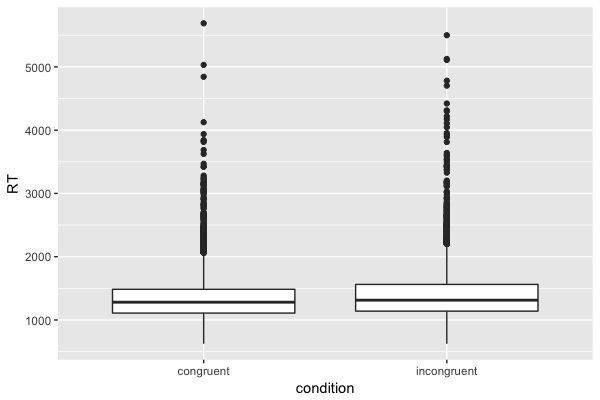
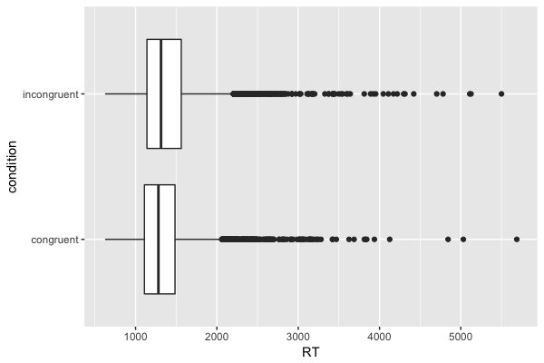
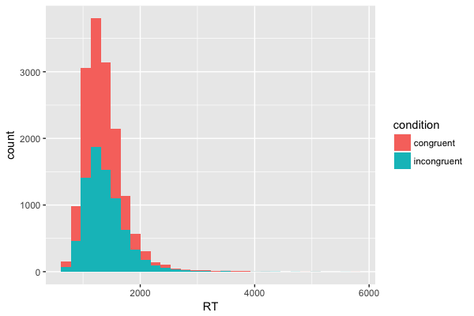
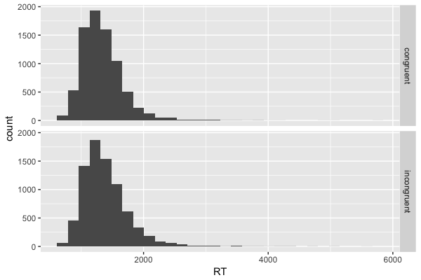
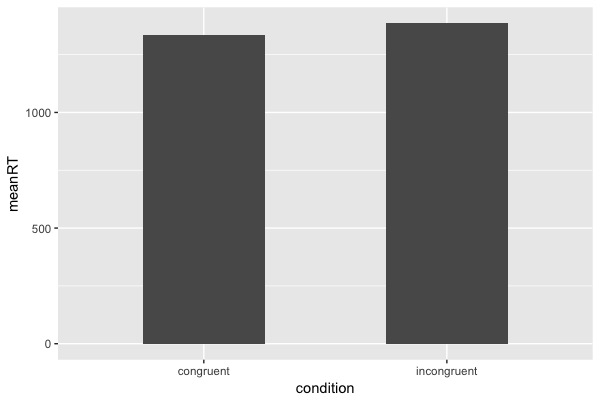
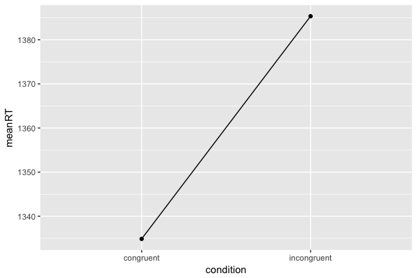
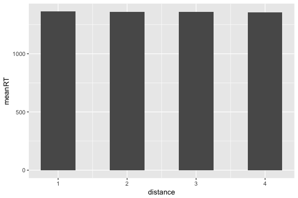
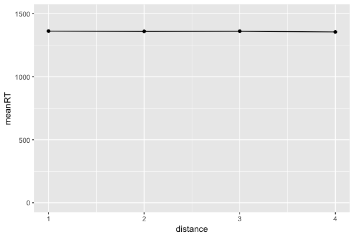
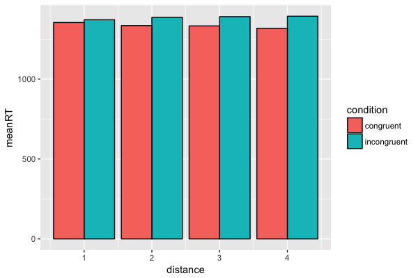
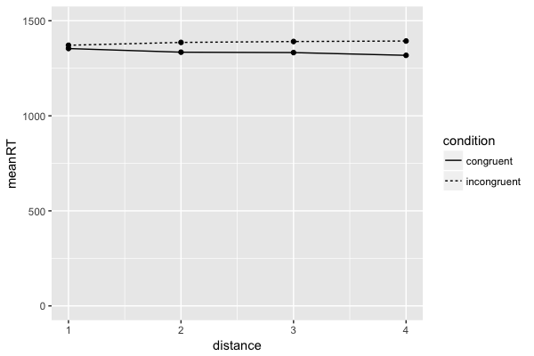

Week 5 lecture notes - PSYC 5316
Introduction
In this lecture, we will learn how to work with large data sets. Data sets are commonly represented as data frames. To begin, we'll use the read_csv function to load a data frame. First, load the tidyverse package, and then execute the read_csv commmand.
library(tidyverse)
rawdata = read_csv("https://git.io/vdkRH")
(Note: if you haven't already installed tidyverse, you can do so by executing install.packages("tidyverse") at the console.
This data set comes from Experiment 2 of Faulkenberry, Cruise, Lavro, and Shaki (2016). In this experiment, we presented people with pairs of single-digit numbers written in two different font sizes. We asked them to use a computer mouse to click on the physically larger of the pair. This resulted in experimental conditions: congruent trials, where the physically larger number was also numerically larger, and incongruent trials, where the physically larger number was numerically smaller. We measured RT in milliseconds.
The data file is structured with the following columns:
| column | description |
|---|---|
| subject | number representing subject identifier |
| condition | size-congruity condition: either "congruent" or "incongruent" |
| distance | numerical distance between presented numbers (1,2,3, or 4) |
| error | indicates whether error was made on trial: 0 = no error, 1=error |
| RT | response time in milliseconds |
| side | side of display on which the physically larger number was presented (either left or right) |
What are data frames?
Data frames are the de facto data structure for most tabular data, and what we use for statistics and plotting.
A data frame is the representation of data in the format of a table where the columns are vectors that all have the same length. Because the column are vectors, they all contain the same type of data (e.g., characters, integers, factors).
We can see this when inspecting the structure of our data frame with the function glimpse:
glimpse(rawdata)
In addition to glimpse, there are some other functions that will help you to get a sense of the content/structure of your data:
| Size | |
dim |
returns a vector with the number of rows in the first element, and the number of columns as the second element |
nrow |
returns the number of rows |
ncol |
returns the number of columns |
| Content | |
head |
shows the first 6 rows |
tail |
shows the last 6 rows |
names |
returns the column names |
Data manipulation using tidyr and dplyr
dplyr is a package for making tabular data manipulation easier. It pairs nicely with tidyr which enables you to swiftly convert between different data formats for plotting and analysis.
The package dplyr provides easy tools for the most common data manipulation tasks. It is built to work directly with data frames, with many common tasks optimized by being written in a compiled language (C++). An additional feature is the ability to work directly with data stored in an external database. The benefits of doing this are that the data can be managed natively in a relational database, queries can be conducted on that database, and only the results of the query are returned.
This addresses a common problem with R in that all operations are conducted in-memory and thus the amount of data you can work with is limited by available memory. The database connections essentially remove that limitation in that you can have a database of many 100s GB, conduct queries on it directly, and pull back into R only what you need for analysis.
The package tidyr addresses the common problem of wanting to reshape your data for plotting and use by different R functions. Sometimes we want data sets where we have one row per measurement. Sometimes we want a data frame where each measurement type has its own column, and rows are instead more aggregated groups. Moving back and forth between these formats is nontrivial, and tidyr gives you tools for this and more sophisticated data manipulation.
Selecting columns and filtering rows
We're going to learn some of the most common dplyr functions (also called verbs): select(), filter(), mutate(), group_by(), and summarize().
To choose columns of a data frame, use select(). The first argument to this function is the data frame (rawdata), and the subsequent arguments are the columns to keep.
select(rawdata, condition, error, RT)
To choose rows based on specific criteria, use filter()
filter(rawdata, error==0)
Pipes
But what if you wanted to select and filter at the same time? There are many ways to do this, but the quickest and easiest is to use pipes.
Pipes are a fairly recent addition to R. Pipes let you take the output of one function and send it directly to the next, which is useful when you need to do many things to the same dataset. Pipes in R look like %>% and are made available via the magrittr package, installed automatically with dplyr.
rawdata %>% filter(error==0) %>% select(subject, condition, RT)
In the above code chunk, we use the pipe to send the rawdata dataset first through filter() to keep only the rows where error=0. Then, we pass that output through the select() function to keep only the columns subject, condition, and RT.
Note that using the pipe operator %>% removes the need to specify the dataset as the first argument to the filter() or select() functions.
If we wanted to create a new object of this smaller version of the data, we could do so by using the assignment operator <-:
data <- rawdata %>% filter(error==0)
If you look in the "Environment" tab, you'll notice that the row dimension has reduced to 15,686. This tells us that there were 44 errors across all participants and trials.
Mutate
Frequently you will want to create new columns based on the values in existing columns. For example, we might want to express response time (RT) in seconds rather than milliseconds. For this, we'll use mutate():
data %>% mutate(RT_sec = RT/1000)
Another good use of mutate() is for recoding a variable. For example, the column distance currently has 4 values: 1, 2, 3, and 4. Suppose we want to recode this variable to have two values: close (distance=1 or 2) and far (distance=3 or 4). We can use mutate() along with ifelse() to do this:
data %>% mutate(dist = ifelse(distance==1 | distance==2, "close", "far"))
Summarize
Many data analysis tasks can be approached using the split-apply-combine paradigm: split the data into groups, apply some analysis to each group, then combine the results. dplyr makes this very easy using the functions group_by() and summarize().
The following code chunk illustrates this:
data %>% group_by(condition) %>% summarize(meanRT = mean(RT))
group_by() takes as its argument the column name(s) that contain the categorical variables for which you want to calculate a summary statistic (e.g., mean). In this example, we are interested in the mean RT by condition. You'll notice that incongruent trials take slightly longer than congruent trials. This is the size-congruity effect, first demonstrated by Henik and Tzelgov in 1982.
Note that you can also group by multiple columns. Suppose we were interested in the mean RT by condition AND distance.
data %>% group_by(condition, distance) %>% summarize(meanRT = mean(RT))
Also, we can compute multiple statistics:
data %>% group_by(condition, distance) %>% summarize(meanRT=mean(RT), sd=sd(RT))
Visualizing data with ggplot2
ggplot2 is a plotting package that makes it simple to create complex plots from data in a data frame. It provides a more programmatic interface for specifying what variables to plot, how they are displayed, and general visual properties. Therefore, we only need minimal changes if the underlying data change
or if we decide to change from a bar plot to a scatterplot. This helps in creating publication quality plots with minimal amounts of adjustments and tweaking.
ggplot likes data in the 'long' format: i.e., a column for every variable, and a row for every observation. Well structured data will save you lots of time when making figures with ggplot.
ggplot graphics are built step by step by adding new elements. Adding layers in this fashion allows for extensive flexibility and customization of plots.
To build a ggplot, we need to:
- pipe our data to the
ggplot()function - define aesthetics (
aes) by selecting the variables to be plotted and the variables to define the presentation. - add
geoms, which are graphical representations in the plot (points, lines,bars).
We will now construct some examples of what is possible using ggplot:
data %>% ggplot(aes(x=condition, y=RT)) + geom_boxplot()
This gives us a vertically oriented boxplot:

We can switch the orientation to horizontal by adding the coord_flip() function.
data %>% ggplot(aes(x=condition, y=RT)) + geom_boxplot() + coord_flip()

Boxplots are fine, but they hide the shape of the distribution. Let's try plotting some histograms.
data %>% ggplot(aes(x=RT, group=condition)) + geom_histogram(aes(fill=condition))

In this plot, the histograms are overlaid on the same plot. We can split them up using faceting:
data %>% ggplot(aes(x=RT)) + geom_histogram() + facet_grid(condition~.)

Note: density plots can be made in the same way..just use geom_density instead of geom_histogram
plotting summaries
Usually, we are interested in the differences between condition means. We will demonstrate this using two types of plots: a bar plot, and a line plot.
First, lets look at a bar plot that demonstrates the difference in condition means between incongruent and congruent trials. Notice how we are using the "split-apply-combine" paradigm along with ggplot here:
data %>% group_by(condition) %>% summarize(meanRT=mean(RT)) %>% ggplot(aes(x=condition,y=meanRT)) + geom_bar(stat="identity", width=0.5)

Similarly, a small change can produce a line plot instead:
data %>% group_by(condition) %>% summarize(meanRT=mean(RT)) %>% ggplot(aes(x=condition, y=meanRT, group=1)) + geom_line() + geom_point()

Notice that this is a terrible plot, though, because the y-axis is truncated. Adding a line with ylim(0,1500) will make the plot better (try it!)
What if we were interested in the differences in mean RT by distance? We can easily edit our code above to get bar plots and line plots for distance instead of condition:
Bar plot:
data %>% group_by(distance) %>% summarize(meanRT=mean(RT)) %>% ggplot(aes(x=distance, y=meanRT)) + geom_bar(stat="identity", width=0.5)

Line plot:
data %>% group_by(distance) %>% summarize(meanRT=mean(RT)) %>% ggplot(aes(x=distance, y=meanRT, group=1)) + geom_line() + geom_point() + ylim(0,1500)

Both plots indicate that numerical distance doesn't seem to have much effect on RTs.
However, a more interesting plot might reveal something different! Lets see what happens when we plot BOTH condition and distance on the same plot:
Bar plot:
data %>% group_by(condition, distance) %>% summarize(meanRT=mean(RT)) %>% ggplot(aes(x=distance, y=meanRT, fill=condition)) + geom_bar(stat="identity", position=position_dodge(), color="black")

Line plot:
data %>% group_by(condition, distance) %>% summarize(meanRT=mean(RT)) %>% ggplot(aes(x=distance, y=meanRT, linetype=condition)) + geom_line() + geom_point() + ylim(0,1500)

It appears that the effect of condition may be increasing as numerical distance increases. If so, this is called an interaction effect.
Performing statistical tests
In this section, we will back up our plots by performing statistical tests. The tests will perform are the paired samples t-test and a couple of ANOVAs (analysis of variance).
t-test: comparing mean RTs by condition
For our first case study, lets look at the effect of condition and see if we find a significant size-congruity effect. That is, are response times on incongruent trials significantly longer than congruent trials?
When participants complete multiple experimental trials, the first step is to collapse all trials into single summary stats (usually the mean). We can use the "split-apply-combine" paradigm to see this.
First, let's see how many participants we had:
length(unique(data$subject))
Now, split-apply-combine will give us a mean RT for each condition and subject. That is, we should get 41x2=82 different mean RTs. We'll add the print(n=82) to the end in order to see all 82 rows.
data %>% group_by(subject, condition) %>% summarize(meanRT=mean(RT)) %>% print(n=82)
Since "condition" is a within-subjects manipulation (each participant completed both experimental conditions), we'll need to use a paired-samples t-test. The t.test function in R requires two vectors as input. We'll use our tidyverse verbs to construct both of these vectors; one for congruent trials, and one for incongruent trials:
congruent <- data %>% group_by(subject, condition) %>% summarize(meanRT=mean(RT)) %>% filter(condition=="congruent") %>% select(subject,meanRT) incongruent <- data %>% group_by(subject, condition) %>% summarize(meanRT=mean(RT)) %>% filter(condition=="incongruent") %>% select(subject,meanRT)
Now, to perform the t-test, we simply type the following:
t.test(incongruent$meanRT, congruent$meanRT, paired=TRUE)
From the output, we can see there is indeed a significant increase in RTs for incongruent trials, \(t(40)=7.48\), \(p<0.001\). Also, we get a 95% confidence interval for the increase as (36.9, 64.3).
one-way ANOVA: comparing mean RTs by numerical distance
Recall when we plotted mean RT against distance, there did not appear to be much of a difference. Lets test this with a one-way ANOVA.
The ANOVA procedures are a bit different than the t-test. First, we collapse all the trials to a single mean RT for each subject x distance combination. Note: we should expect 41x4=164 different mean RTs.
dataByDistance <- data %>% group_by(subject, distance) %>% summarize(meanRT=mean(RT)) %>% mutate(distance=as.factor(distance))
Note: the last mutate command is necessary to make the ANOVA work correctly. All independent variables in an ANOVA model must be "factors". This command forces R to interpret the numbers 1,2,3,4 as levels of a single categorical factor instead of values of some continuous variable.
Next, we define the ANOVA model:
distance.aov = aov(meanRT~distance +
Error(as.factor(subject)/distance),
data=dataByDistance
)
Note again the as.factor() command; this time, it is used to force the subject variable to be read as categorical.
Finally, we can see the usual ANOVA table by using the summary() function:
summary(distance.aov)
The output confirms our suspicion. There was no effect of distance on mean RTs, \(F(3,120)=0.45\), \(p=0.72\).
Factorial ANOVA: mean RT by condition and distance
In one of our figures above, we saw that the difference in RTs between congruent and incongruent trials seemed to increase as numerical distance increased. If so, this would be an interaction between condition and distance. To test this, we use a factorial anova.
dataFactorial <- data %>%
group_by(subject, condition, distance) %>%
summarize(meanRT = mean(RT)) %>%
mutate(distance=as.factor(distance))
factorial.aov = aov(meanRT ~ condition*distance +
Error(as.factor(subject)/(condition*distance)),
data=dataFactorial
)
summary(factorial.aov)
As we can see, the overall picture we've suspected is confirmed:
- there was a significant main effect of condition. Mean RTs on incongruent trials were significantly longer than congruent trials, \(F(1,40)=55.91\), \(p<0.001\).
- there was no effect of distance, \(F(3,120)=0.46\), \(p=0.71\).
- however, there was a significant interaction between condition and distance, \(F(3,120)=7.86\), \(p<0.001\).